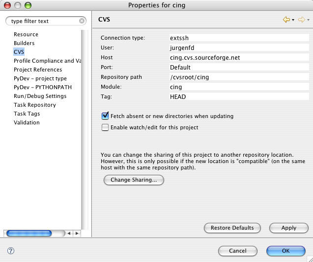

Make sure you have the unstable trees in your fink.conf too. I had to add:
/unstable/main and /unstable/finkand do:
fink selfupdate
fink install biggles-py25Note that this also installs the python 2.5 plotlib and numeric dependencies.
fink install ipython-py25
Always start from command line instead of Dock/Taskbar so that it gets your environment settings such as PRODIR for the PROCHECK_NMR installation.
CING is being developed on Eclipse 3.3 with PyDev Extensions for automatic code analysis and organization.
Register with sourceforge to get a user account. Check out the CING project from CVS in Eclipse.
This is a two wizard step process; first the CVS then the Pydev wizard.

The project tree with the python code expanded should look something like:

Add the local python dir to your PYTHONPATH inside Eclipse. The CCPN is mandatory but the Wattos python dir is really optional.